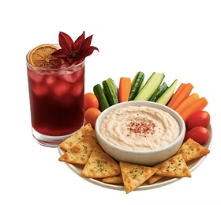

Plug-and-play menus
Package catering is built for straightforward events, office meals, gatherings, and hosts who want strong food without a heavy planning process.


Full-Service Catering & Events
Reimagined Nutrition supports private homes, corporate settings, workplace events, and outside venues with chef-led menus and organized service.
Ali Senatore, Executive Chef and Registered Dietitian Nutritionist (RDN, CDN), builds catering around the event, the guests, and the level of support the host needs.
Two Ways To Work Together
Package catering is built for straightforward events, office meals, gatherings, and hosts who want strong food without a heavy planning process.

Settings
Reimagined Nutrition can support private homes and in-home service, corporate and workplace events, and outside venues. In-home events get the same planning as any venue: staffing, menu direction, and service flow built into the proposal.
Event Servers, TIPS-certified bartenders, and support staff, so the event feels organized and luxurious.
Lead Chef — Ali Senatore, RDN, CDN
What To Expect
The inquiry form collects the event type, date, location, guest count, service style, dietary needs across the group, budget range, and anything else Ali should know. The 15-minute call matters because it establishes fit before a proposal is built.
For designed and curated experiences, planning can include menu development, staffing, event flow, service details, and day-of management.
Start Here
Call Ali or share the basics now. The proposal will be built after Ali understands the setting, guests, service style, and level of support needed.